Results¶
This page reports the cross-validation results for every model run so far.
The numbers are not typed in by hand: they are read from the tables and
figures in doc/generated/, which src/run_cv.py and
src/run_profile.py write. To update this page after changing the code:
python src/run_cv.py
python src/run_profile.py
sphinx-build -b html doc doc/_build/html
How the results were obtained¶
Data used: only the cross-validation setups, about 85% of the 106 wind-tunnel setups. The test hold-out (seed 41) has not been used to train, tune or score any model.
Method: grouped 5-fold cross-validation, stratified on chord length, so every row of a setup is either all in training or all in validation. It is repeated with seeds 42, 43 and 44.
Predictions: every cross-validation row is predicted once per seed by a model that did not see it during training (an out-of-fold, or OOF, prediction).
Metrics: RMSE (the main metric), MAE and R² are computed on each validation fold separately. Each summary entry is the mean ± sample standard deviation over all 15 folds (5 folds × 3 seeds). Every fold scores a model on a batch of setups it never saw, so the ± shows how much the score changes from one batch of unseen setups to the next.
Timings:
time.perf_counteraround each fold’s fit and predict, averaged over all 15 folds.
Models so far¶
linear: ordinary least-squares linear regression (the baseline). Inputs and target are standardised with scalers fitted on the training folds only.
mlp (tuned): a multi-layer perceptron whose network size and L2 penalty
alphaare chosen by nested cross-validation (see Tuned MLP (nested cross-validation) below). It uses the same scaling pipeline and the same outer folds as the linear baseline.
Feature sets: A = the five raw inputs; B = A + log10 frequency, Strouhal number and chord Reynolds number.
Verification: manufactured-solution tests¶
Before trusting any result, each model’s implementation was checked on a manufactured solution: made-up data from a formula whose answer is known exactly. This tests whether the code computes what it should (verification). How well the model predicts real airfoil noise (validation) is a separate question, covered by the rest of this page.
Both checks run the real model pipelines (build_model), including the
input and target scaling, so the whole chain is verified, not just the
estimator inside it. They are part of the test suite
(test/test_verification.py), and python src/run_verification.py
produces the table and figure below.
Linear least squares. 200 points of
y = 3 + 2 x1 − 5 x2, with no noise and withx1andx2about 10⁸ apart in scale (like Reynolds and Strouhal numbers). A correct solver must recover the coefficients and reproduceyup to floating-point round-off.MLP. 200 evenly spaced points of
y = sin(x)on [0, 2π], fitted with the frozen final MLP (FINAL_MLP). A correctly implemented network should learn this smooth non-linear curve. It is scored on points between the training points, so it has to learn the curve rather than memorise the points.Negative control. The linear model is run on the same sine data. It cannot represent a curve, so it must fail; this shows the MLP test is capable of failing.
Check |
Model |
Quantity |
Value |
Pass mark |
Result |
|---|---|---|---|---|---|
Linear law y = 3 + 2x1 - 5x2 |
linear |
largest relative coefficient error |
2.1e-09 |
<= 1e-06 |
PASS |
Linear law y = 3 + 2x1 - 5x2 |
linear |
largest prediction error |
5.3e-10 |
(round-off) |
|
y = sin(x), 200 points |
final MLP |
RMSE between training points |
0.065 |
<= 0.1 |
PASS |
y = sin(x), 200 points |
final MLP |
R² between training points |
0.9915 |
>= 0.98 |
PASS |
y = sin(x), 200 points |
final MLP |
largest error (at x = 6.28) |
0.225 |
(reported only) |
|
y = sin(x), negative control |
linear |
RMSE between training points (must fail) |
0.442 |
>= 0.3 |
PASS |

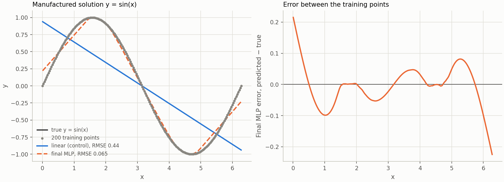
Left: the manufactured solution y = sin(x), its 200 training points,
the final MLP’s fit and the linear control. Right: the final MLP’s error
between the training points.¶
The linear solver is exact to round-off. It recovers the coefficients to a relative error of about 10⁻⁹, despite inputs 10⁸ apart in scale.
The final MLP learns the sine. RMSE is 0.065 between the training points (6.5% of the sine’s amplitude), with R² = 0.99, so it passes. The linear control fails clearly (RMSE 0.44).
The MLP’s error is largest at the two ends of the range (about 0.2), where the network only has data on one side. In the middle it stays within about ±0.1.
The fit is made of short straight segments, visible as slight kinks. That is expected, because the ReLU activation builds curves from straight pieces.
The MLP’s fit is deliberately smooth, not exact. The final model’s strong L2 penalty (alpha = 1) and early stopping trade exactness for smoothness, which suits noisy measured data. So this check confirms the network learns smooth non-linear relationships correctly; it is not expected to hit zero error.
The pass marks (MLP RMSE ≤ 0.10 and R² ≥ 0.98; control RMSE ≥ 0.30) were set after a first measurement, with a safety margin, and are recorded in
functions.verification.
Overall accuracy¶
Model |
Feature set |
RMSE (dB) |
MAE (dB) |
R² |
Fit time per fold (ms) |
Predict time per fold (ms) |
|---|---|---|---|---|---|---|
linear |
A |
4.894 ± 0.235 |
3.815 ± 0.218 |
0.485 ± 0.078 |
4.08 |
1.63 |
linear |
B |
4.582 ± 0.254 |
3.574 ± 0.221 |
0.548 ± 0.072 |
3.8 |
1.42 |
Adding the physics features (set B) lowers the linear baseline’s RMSE and raises R² compared with set A. Both feature sets still leave around half of the SPL variance unexplained, which suggests the relationship is strongly non-linear and motivates the non-linear models planned next.

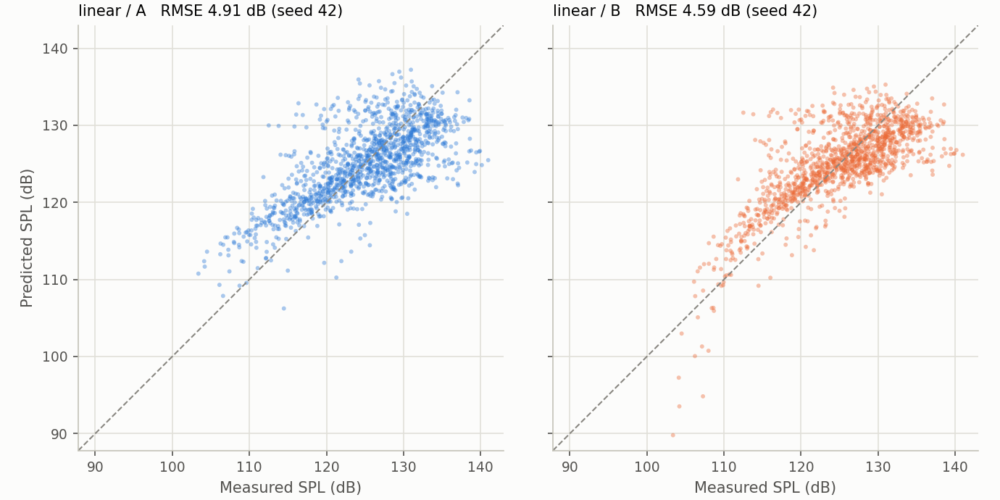
Out-of-fold predicted vs measured SPL for one CV seed, so every cross-validation row appears once. Points on the dashed line are perfect predictions. The clouds are flatter than the line: the models over-predict quiet conditions and under-predict loud ones, pulling extremes towards the mean. The RMSE in each title is for this one seed, pooled over all its folds, so it differs slightly from the mean of per-fold scores in the table above.¶
Where the errors are¶
RMSE (dB) of the OOF predictions for each subgroup, averaged over seeds. Rows is the number of cross-validation measurements in the group.
Grouped by |
Group |
Rows |
linear / A |
linear / B |
|---|---|---|---|---|
Chord (m) |
0.0254 |
238 |
6.817 |
6.699 |
Chord (m) |
0.0508 |
196 |
4.331 |
3.884 |
Chord (m) |
0.1016 |
226 |
4.734 |
4.042 |
Chord (m) |
0.1524 |
240 |
4.579 |
4.097 |
Chord (m) |
0.2286 |
221 |
4.465 |
4.221 |
Chord (m) |
0.3048 |
155 |
2.96 |
3.142 |
Velocity (m/s) |
31.7 |
223 |
4.717 |
4.366 |
Velocity (m/s) |
39.6 |
436 |
4.953 |
4.735 |
Velocity (m/s) |
55.5 |
240 |
4.869 |
4.314 |
Velocity (m/s) |
71.3 |
377 |
4.953 |
4.702 |
Angle band (deg) |
0 |
311 |
4.364 |
3.892 |
Angle band (deg) |
0-5 |
304 |
3.999 |
3.89 |
Angle band (deg) |
5-10 |
333 |
5.318 |
4.936 |
Angle band (deg) |
10-15 |
158 |
5.287 |
4.715 |
Angle band (deg) |
>15 |
170 |
5.931 |
5.887 |
Frequency band |
200-500 Hz |
240 |
6.938 |
6.733 |
Frequency band |
630-1600 Hz |
407 |
4.465 |
4.236 |
Frequency band |
2-5 kHz |
434 |
3.73 |
3.267 |
Frequency band |
6.3-20 kHz |
195 |
5.01 |
4.537 |

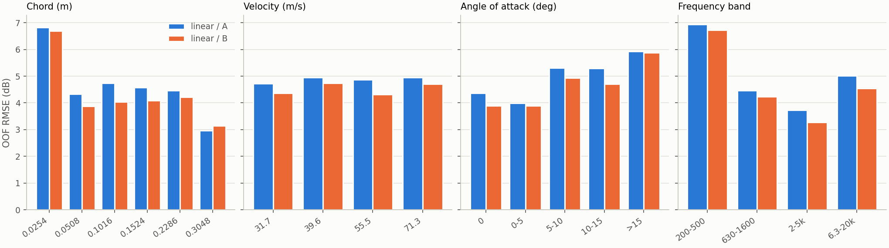
The same breakdown as the table, drawn as bars.¶
For the linear baseline, the largest errors are at the smallest chord, the lowest frequency band and the highest angle band (above 15°, where the boundary layer is likely to be separated or near stall). Free-stream velocity has a much smaller effect on error. These are the regions where a straight line in the inputs fits the measured spectra worst.

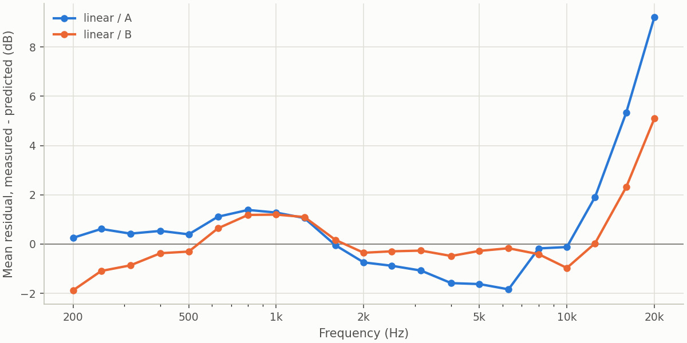
Mean residual (measured − predicted) at each measured frequency, for one CV seed. An unbiased model would follow the zero line. A curve that rises sharply at the highest frequencies means the model systematically under-predicts there: SPL does not change linearly with frequency, so a linear model cannot follow the spectrum’s shape.¶

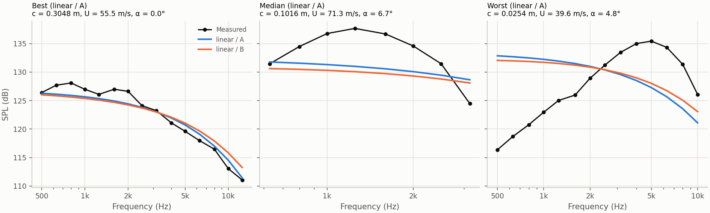
Measured and predicted spectra for the best, median and worst predicted setups, ranked by the first model’s per-setup RMSE. Each prediction comes from a model that never saw that setup. The linear models can only produce smooth, monotonic curves, so they miss the peaked spectra that appear at smaller chords and higher angles.¶
What the linear model learned¶
Each cell shows an input’s coefficient in dB per standard deviation of that input, as mean ± std over all 15 fits (5 folds × 3 seeds). The value in brackets is the percentage of fits whose sign agrees with the mean. Because every input is expressed per standard deviation, effects can be compared directly even though the inputs have very different units.
Feature |
linear / A |
linear / B |
|---|---|---|
frequency_hz |
-3.94 ± 0.09 [100%] |
-2.82 ± 0.29 [100%] |
attack_angle_deg |
-2.23 ± 0.26 [100%] |
-1.92 ± 0.19 [100%] |
chord_length_m |
-3.31 ± 0.10 [100%] |
-3.14 ± 0.38 [100%] |
velocity_mps |
1.55 ± 0.13 [100%] |
1.05 ± 0.25 [100%] |
disp_thickness_m |
-2.15 ± 0.34 [100%] |
-0.66 ± 0.39 [87%] |
log_frequency |
-0.13 ± 0.43 [60%] |
|
strouhal |
-2.52 ± 0.16 [100%] |
|
reynolds |
0.09 ± 0.40 [60%] |

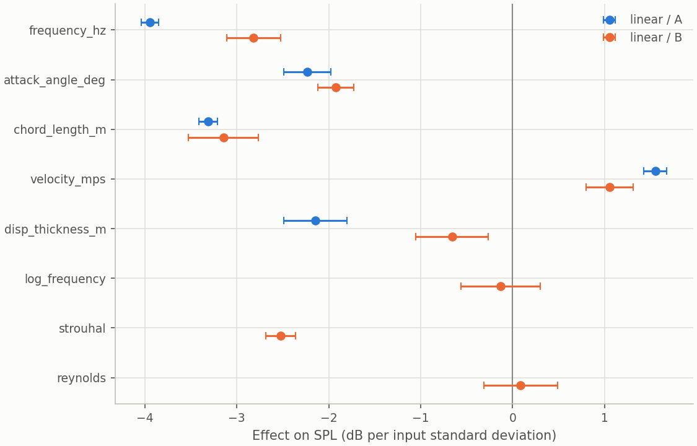
The same coefficients, with whiskers of ± one standard deviation over the 15 fits. A whisker that crosses zero marks a coefficient whose sign is not reliably estimated.¶
On set A every coefficient keeps the same sign in every fit, so the direction of each effect is reliable. Higher frequency, longer chord, larger angle of attack and thicker boundary layer lower the SPL, and higher velocity raises it.
On set B, some coefficients (log_frequency, reynolds) change sign
between fits and have a spread larger than their mean. These inputs are
strongly correlated with others (log frequency with frequency; Reynolds
number with chord and velocity), so the model cannot separate their
individual effects. Their coefficients should not be given a physical
meaning, even though the predictions themselves are stable.
Tuned MLP (nested cross-validation)¶
How it was tuned¶
For every seed and outer fold, an inner grouped 5-fold cross-validation on the outer-training setups compared 35 settings: hidden layers (32,), (64,), (32, 32), (64, 64) and (128, 128), each with alpha 1e-5, 1e-4, 1e-3, 1e-2, 0.1, 1 and 10. The setting with the lowest inner RMSE was refitted on all outer-training rows and scored on the outer fold, which played no part in the choice. Every split keeps a setup’s rows together, and the test hold-out was not used.
The grid was widened once. In a one-seed trial with the original 20 settings (largest network (64, 64), largest alpha 0.1), the largest network won every fold and the largest alpha won four of five, so the best settings sat on the edge of the grid. (128, 128) and alphas 1 and 10 were added before the full run reported here.
Accuracy and comparison with linear¶
Feature set |
Outer folds |
MLP RMSE (dB), mean ± SD over folds |
MLP RMSE SD across seeds (dB) |
MLP MAE (dB) |
MLP R² |
Linear RMSE (dB) |
MLP − linear RMSE per fold (dB) |
Folds MLP won |
Tuning time (min) |
|---|---|---|---|---|---|---|---|---|---|
A |
15 |
2.561 ± 0.332 |
0.027 |
1.818 ± 0.176 |
0.855 ± 0.050 |
4.894 |
-2.333 ± 0.383 |
15 / 15 |
23.8 |
B |
15 |
2.365 ± 0.227 |
0.052 |
1.689 ± 0.132 |
0.879 ± 0.030 |
4.582 |
-2.217 ± 0.174 |
15 / 15 |
19.8 |
Two spreads are reported. SD over folds is how much the score changes from one batch of unseen setups to the next. SD across seeds is how much the average depends on the random shuffle of setups into folds. The second is much smaller, so the results do not hinge on one particular split.
Both models are scored on exactly the same folds, so the fair comparison is the RMSE difference within each fold (MLP minus linear; negative means the MLP was better). The tuned MLP was better than linear in every outer fold on both feature sets, by roughly 2.2–2.3 dB. That is far larger than the spread of the differences. As with the linear model, feature set B gives a lower MLP RMSE than set A.

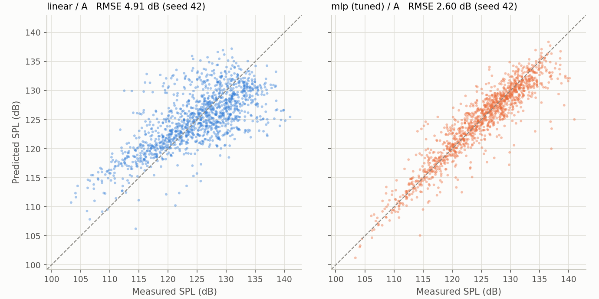
Feature set A: out-of-fold predictions for one seed, linear (left) and tuned MLP (right). The MLP’s points lie much closer to the y = x line, including the quiet and loud extremes that the linear model pulls towards the mean.¶

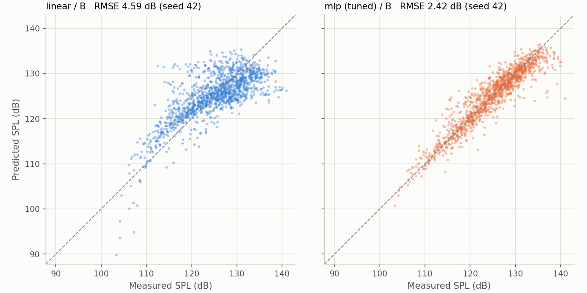
Feature set B: the same comparison.¶
Where the MLP still struggles¶

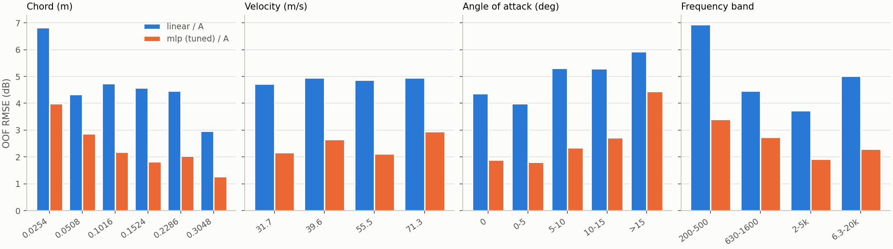
Feature set A: RMSE by subgroup, linear and tuned MLP.¶

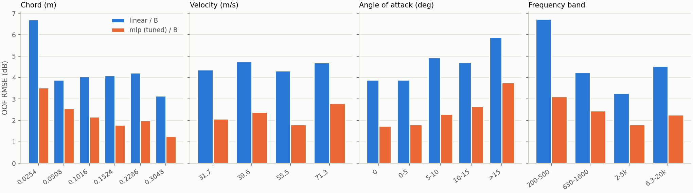
Feature set B: RMSE by subgroup, linear and tuned MLP.¶
The MLP lowers the error in every subgroup, but the pattern is the same as for linear: the smallest chord, angles above 15° and the lowest frequency band remain the hardest conditions to predict. One new pattern appears: for the MLP, the highest free-stream velocity (71.3 m/s) has a noticeably larger error than the other velocities, which was not the case for linear.
Which settings were chosen¶
Feature set |
Hidden layer sizes |
alpha |
Outer folds won |
|---|---|---|---|
A |
(128, 128) |
0.1 |
9 |
A |
(128, 128) |
1 |
5 |
A |
(128, 128) |
0.01 |
1 |
B |
(128, 128) |
1 |
7 |
B |
(64, 64) |
0.1 |
2 |
B |
(64, 64) |
1 |
2 |
B |
(128, 128) |
0.1 |
2 |
B |
(64,) |
0.001 |
1 |
B |
(32, 32) |
0.1 |
1 |

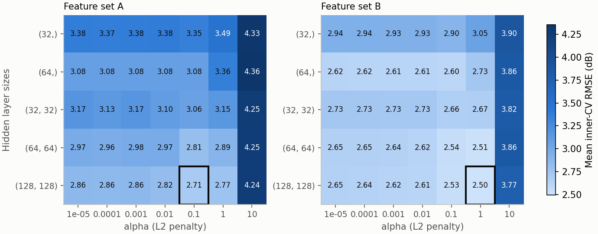
Mean inner-CV RMSE for every setting, averaged over all outer folds and seeds; the outlined cell is the best. Alpha = 10 is clearly too strong a penalty for every network, and the best alphas are 0.1–1, so the alpha range now brackets the optimum. Larger networks do better, but the gain shrinks: on set B, (128, 128) and (64, 64) are almost tied at alpha 1.¶
Edge-of-grid warning. The largest network, (128, 128), was chosen in 15 of 15 outer folds on set A and in 9 of 15 on set B. A still larger network might be slightly better, especially on set A. On set B, the heatmap shows the improvement from (64, 64) to (128, 128) is already very small.
Early stopping¶

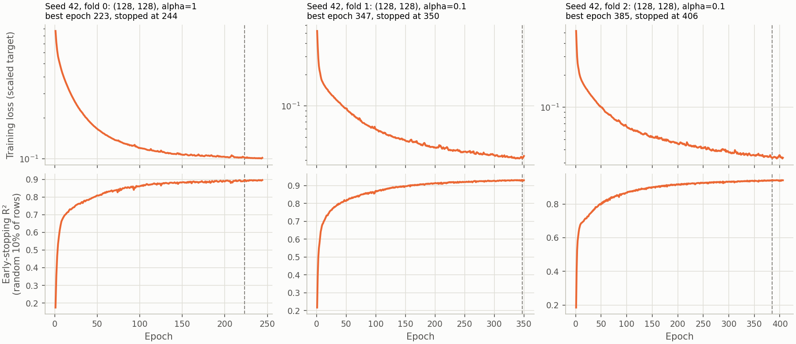
Feature set A: training loss (top) and early-stopping R² (bottom) per epoch for the selected model in three outer folds. The dashed line marks the best epoch; the final model keeps those weights.¶

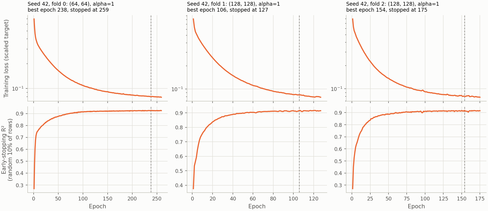
Feature set B: the same curves.¶
No fit, inner or refit, reached the max_iter cap of 2000 epochs: early
stopping ended every one.
Limitations of the tuning¶
Early stopping holds back random rows, not whole setups.
MLPRegressordecides when to stop using a random 10% of the rows it is trained on. Rows from one setup are strongly correlated, so these held-back rows usually have near-identical neighbours from the same setup in the training data. The stopping check is therefore mildly optimistic, and training may stop a little late. This does not affect the reported scores, which come from grouped outer folds that early stopping never sees.Inner folds are grouped but not stratified on chord.
The largest network was often chosen, so the grid may not contain the best size (see above).
One weight initialisation. Every MLP uses
random_state=0. Results for other initialisations were not tested.
Worst-predicted setups¶
Each wind-tunnel setup (one chord, velocity and angle) gives one measured noise spectrum. To see which conditions the models fail on, the out-of-fold RMSE of every one of the 90 cross-validation setups was computed. In each CV repeat a setup is predicted once, by a model that never saw it, and its RMSE is averaged over the 3 seeds. Setups are ranked by the tuned MLP’s RMSE, because the better model’s failures are the informative ones. The table and figure are for feature set B, the best combination.
Rank |
Setup |
Chord (m) |
Velocity (m/s) |
Angle (deg) |
Frequencies |
MLP RMSE (dB) |
MLP bias (dB) |
Linear RMSE (dB) |
|---|---|---|---|---|---|---|---|---|
1 |
19 |
0.0254 |
71.3 |
22.2 |
15 |
6.44 |
3.48 |
7.7 |
2 |
18 |
0.0254 |
71.3 |
17.4 |
17 |
4.75 |
-4.41 |
8.91 |
3 |
28 |
0.0508 |
39.6 |
19.7 |
14 |
4.54 |
-1.39 |
3.28 |
4 |
9 |
0.0254 |
39.6 |
22.2 |
15 |
4.49 |
2.06 |
6.61 |
5 |
8 |
0.0254 |
39.6 |
17.4 |
15 |
4.48 |
-1.72 |
8.55 |
6 |
55 |
0.1016 |
71.3 |
8.9 |
16 |
4.31 |
1.75 |
5.69 |
7 |
93 |
0.2286 |
71.3 |
7.3 |
16 |
4.07 |
2.6 |
7.51 |
8 |
26 |
0.0508 |
39.6 |
11.2 |
14 |
3.83 |
0.26 |
3.66 |
9 |
3 |
0.0254 |
31.7 |
17.4 |
15 |
3.78 |
1.36 |
7.28 |
10 |
14 |
0.0254 |
71.3 |
0.0 |
10 |
3.41 |
1.46 |
5.4 |

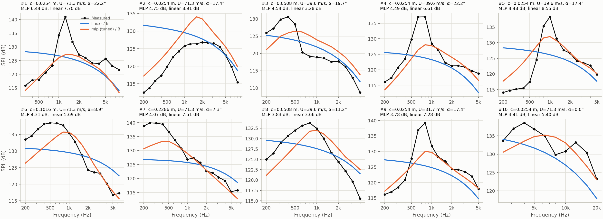
Measured spectra (black) and out-of-fold predictions (averaged over the 3 seeds) for the 10 worst setups, worst first. Each panel has its own SPL axis.¶
What the worst setups have in common:
They cluster at the smallest chord and the most extreme conditions. 6 of the 10 have the smallest chord (0.0254 m), 6 are at an angle of attack of 17.4° or more, and 5 are at the highest velocity (71.3 m/s). This matches the RMSE breakdown above.
Several have a sharp, narrow tonal peak standing 18–21 dB above the neighbouring troughs (ranks 1, 4, 5 and 9: all 0.0254 m chord at 17.4–22.2°). Both models flatten the peak. For three of these four, the frequencies around the peak hold 64–84% of the MLP’s squared error, so the miss is concentrated there. Rank 5 is the exception: its error is spread along the spectrum (see Where along the spectrum the errors are). The smallest chord also gives the lowest chord Reynolds numbers in the dataset (about 5×10⁴ to 1.2×10⁵). Narrow peaks like these are consistent with tonal noise mechanisms that appear at low Reynolds number, such as laminar boundary-layer vortex shedding. The data cannot confirm the mechanism, but it explains why a model trained mostly on smooth broadband spectra struggles here.
The problem setups are the same for both feature sets. 9 of the 10 worst setups for set A are also among the 10 worst for set B (
results/worst_setups_A.csv).The MLP is not better everywhere. It beats linear on 8 of these 10 setups, but is worse on ranks 3 and 8 (0.0508 m chord at 39.6 m/s), where it puts a peak at the wrong frequency.
Very few training setups resemble these conditions. When one of them is held out, the model sees at most a few setups with the same chord at nearby angles, so it has to extrapolate. These setups are therefore where the model is least trustworthy, and the main limit on its use near stall and at small chords.
Error map over the test conditions¶

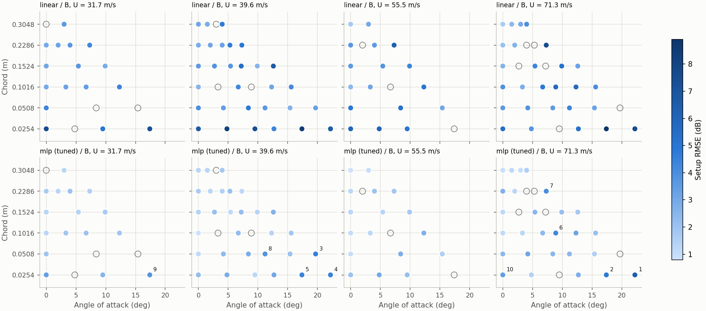
Every cross-validation setup placed by its test conditions (one panel per velocity, angle across, chord up) and coloured by RMSE on one shared scale; top row linear, bottom row tuned MLP (feature set B). Numbers mark the 10 worst MLP setups. Hollow grey circles are held-out test setups, shown only to make gaps in the test matrix visible (they are not scored).¶
The map shows that the tested conditions do not form a full grid: each chord was tested at its own set of angles, and some combinations are missing. Linear’s errors are large across the whole matrix. The MLP’s are small in most places and concentrate at the smallest chord at high angle, and at the highest velocity. Those are the edges of the tested region, where a held-out setup has the fewest similar neighbours to learn from.
Do the peaks follow Strouhal scaling?¶
A noise source that sheds at a fixed Strouhal number St = f L / U
(L a length scale of the flow) has a peak frequency proportional to
U / L. On log axes that is a straight line of slope 1. This is a physical
check on the data itself, made with the measured spectra of the
cross-validation setups only. A peak is the most prominent interior maximum
of a spectrum that stands at least 5 dB above its neighbouring troughs; 64 of
the 90 setups have one. The conclusions below were the same with 3 dB and
8 dB thresholds.
Length scale L |
Setups with a peak |
Fitted slope (constant St gives 1) |
R² |
Median St = f L / U |
Spread of f (×) |
Spread of St (×) |
|---|---|---|---|---|---|---|
δ* (displacement thickness) |
64 |
0.48 ± 0.09 |
0.64 |
0.0926 |
1.96 |
2.04 |
c (chord) |
64 |
0.4 ± 0.14 |
0.34 |
3 |
1.96 |
2.22 |

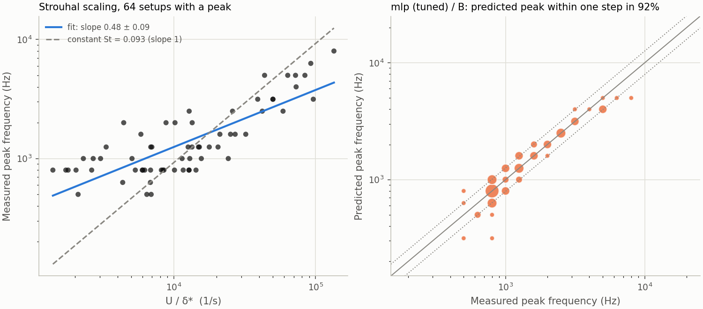
Left: measured peak frequency against U / δ*. The dashed line is
constant-Strouhal scaling (slope 1) through the median Strouhal number;
the solid line is the fitted slope. The horizontal bands are the discrete
1/3-octave frequencies. Right: frequency of the tuned MLP’s predicted peak
against the measured peak; marker area counts setups, and dotted lines
are one 1/3-octave step either side of perfect agreement.¶
No single Strouhal number describes the peaks. The fitted slope against
U / δ*is about 0.5, with a 95% interval well below 1, and the Strouhal number at the peak varies about as much as the peak frequency itself. The chord is a worse length scale still (lower R²). This fits the peaks coming from different noise mechanisms under different conditions, for example turbulent trailing-edge noise, tonal shedding at low Reynolds number and separated flow at high angle, each with its own scaling. The dataset also gives only the suction-side displacement thickness. Some mechanisms scale with other lengths, such as the pressure-side boundary layer.The coarse frequency spacing limits this test. Peaks are known only to the nearest 1/3-octave step (about ±12%), and each geometry was tested at only 3–4 velocities.
The MLP puts its peak in the right place. For 92% of the peaked setups, its predicted spectrum peaks within one 1/3-octave step of the measured peak. The linear model never does: its predicted spectra only slope one way. So the MLP’s remaining errors are mostly about the height of the spectrum, not the location of its peak.
Where along the spectrum the errors are¶

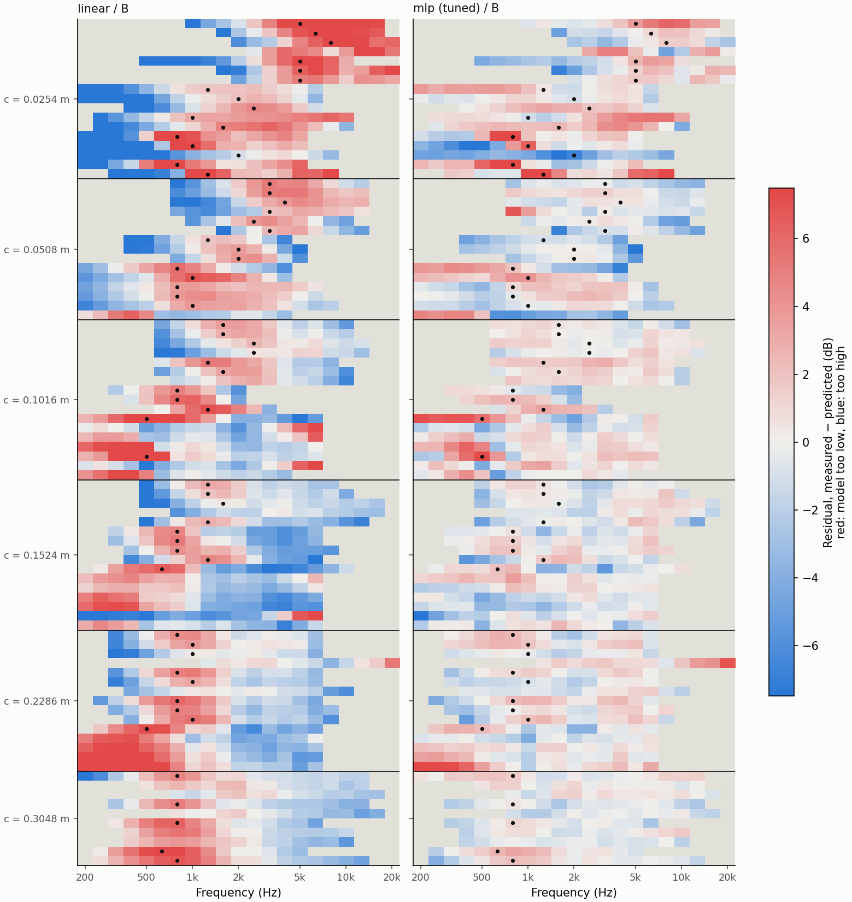
Residual (measured − predicted, averaged over seeds) for every cross-validation setup and frequency. Red means the model predicts too low, blue too high, and grey means that frequency was not measured. Rows are grouped by chord and ordered by angle, then velocity; dots mark measured peaks.¶
Model |
Setups |
Frequencies in peak window (median) |
Squared error in peak window (median) |
|---|---|---|---|
linear / B |
all peaks (>= 5 dB), n = 64 |
21% |
29% |
linear / B |
strongly tonal (>= 15 dB), n = 4 |
20% |
41% |
mlp (tuned) / B |
all peaks (>= 5 dB), n = 64 |
21% |
12% |
mlp (tuned) / B |
strongly tonal (>= 15 dB), n = 4 |
20% |
67% |
Linear has a systematic tilt. For most chords it predicts too low at low frequencies and too high at high frequencies, and misses peaks broadly. A straight line in the inputs cannot follow the spectral shape.
The MLP’s residuals are much smaller and mostly unstructured. For a typical peaked setup, the peak window holds less of the MLP’s error than its share of the frequencies, so ordinary peaks are not where the MLP fails.
The exception is the strongly tonal setups (peaks of 15 dB or more, all at the smallest chord and high angle). There the peak window, 20% of the frequencies, holds most of the MLP’s squared error. These narrow spikes are the clearest remaining failure. With only four such setups, and each held out in turn, the model has almost no examples to learn their height from.
Tonal peaks and MLP error¶

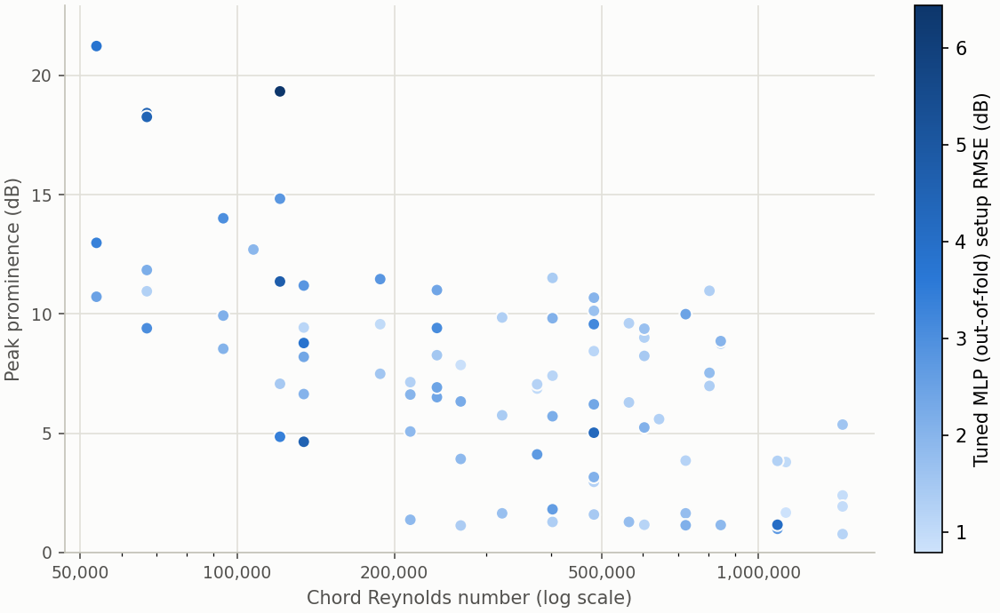
The same axes as the tonal-peaks plot on the exploration page, for the 90 cross-validation setups, with each dot coloured by the tuned MLP’s out-of-fold RMSE for that setup (darker = larger error).¶
Spikier spectra tend to be predicted worse. The rank correlation between peak prominence and MLP setup RMSE is 0.31, a moderate link. The 4 strongly tonal setups have a median RMSE of 4.5 dB, against 1.7 dB for the 26 setups whose peaks stand less than 5 dB proud.
Tonal peaks are not the only cause. A few large errors occur on spectra with modest peaks, such as the 0.0508 m chord at 19.7° (about 4.6 dB prominence, 4.5 dB RMSE), where the model puts the peak in the wrong place rather than missing its height.
Runtime, memory and FLOPs¶
The final model is frozen from the nested-CV results (CV data only; the test
hold-out was not used): (128, 128), alpha = 1.0, on feature set B. It won
7 of the 15 outer folds and had the lowest mean inner-CV RMSE (2.50 dB). A
cheaper runner-up, (64, 64) with alpha = 0.1 (2.54 dB, about 4× fewer
weights), is profiled alongside it. The settings live in
functions.models.FINAL_MLP and RUNNER_UP_MLP.
How it was measured¶
Training data: each model is trained on all 1,276 cross-validation rows, never the test hold-out.
Time: fit and predict are each repeated 5 times; the table gives the median and the fastest (min) run.
Memory: peak memory during a fit is traced with
tracemalloc. This is a lower bound, since it cannot see memory allocated inside compiled maths libraries.Session: all four models were profiled in the same session on the same machine (below).
FLOPs are estimates from formulas, not measurements:
linear:
2np² + 11p³for the SVD least-squares solve plus scaling (functions.profiling.linear_flop_estimate());MLP: about 6 FLOPs per weight per training row per epoch (2 forward, about 4 backward), plus 2 per weight for the early-stopping rows each epoch (
functions.profiling.mlp_flop_estimate()).
The fit rate is the estimated FLOPs divided by the median fit time.
Model |
Feature set |
Weights |
Epochs |
Fit time, median (ms) |
Fit time, min (ms) |
Predict time, median (ms) |
Peak fit memory (MB) |
Weights (kB) |
Pickled model (kB) |
Fit FLOPs, estimate (MFLOP) |
Fit rate (MFLOP/s) |
|---|---|---|---|---|---|---|---|---|---|---|---|
linear |
A |
6 |
3.0 |
2.9 |
1.0 |
0.21 |
0.05 |
1.7 |
0.1 |
38 |
|
linear |
B |
9 |
3.1 |
3.0 |
1.29 |
0.3 |
0.07 |
1.8 |
0.2 |
78 |
|
mlp_final |
B |
17,793 |
177 |
1462.3 |
1400.9 |
3.09 |
2.19 |
142.34 |
437.9 |
22,499.0 |
15,387 |
mlp_runner_up |
B |
4,801 |
226 |
1664.7 |
1591.2 |
2.57 |
0.99 |
38.41 |
127.5 |
7,751.4 |
4,656 |
Comparison |
Quantity |
Ratio |
|---|---|---|
mlp_final (B) / linear (B) |
Fit time (median) |
464.9× |
mlp_final (B) / linear (B) |
Predict time (median) |
2.4× |
mlp_final (B) / linear (B) |
Peak fit memory |
7.3× |
mlp_final (B) / linear (B) |
Model size (pickled) |
241.2× |
mlp_final (B) / linear (B) |
Fit FLOPs (estimate) |
91164.5× |
mlp_final (B) / linear (B) |
Weights |
1977.0× |
mlp_final (B) / mlp_runner_up (B) |
Fit time (median) |
0.9× |
mlp_final (B) / mlp_runner_up (B) |
Predict time (median) |
1.2× |
mlp_final (B) / mlp_runner_up (B) |
Peak fit memory |
2.2× |
mlp_final (B) / mlp_runner_up (B) |
Model size (pickled) |
3.4× |
mlp_final (B) / mlp_runner_up (B) |
Fit FLOPs (estimate) |
2.9× |
mlp_final (B) / mlp_runner_up (B) |
Weights |
3.7× |
Item |
Value |
|---|---|
cpu |
Intel(R) Core(TM) i7-10510U CPU @ 1.80GHz |
logical_cpus |
8 |
platform |
Windows-10-10.0.19045-SP0 |
python |
3.10.5 |
numpy |
1.24.2 |
scikit_learn |
1.7.2 |
OMP_NUM_THREADS |
unset |
OPENBLAS_NUM_THREADS |
unset |
MKL_NUM_THREADS |
unset |
blas |
openblas (8 threads); openmp (8 threads); openblas (8 threads) |
What the numbers show¶
Training cost is the price of the MLP’s accuracy. Training the final MLP takes about 1.4 s, roughly 400 times longer than the linear fit. It has about 2,000 times as many weights and needs about 90,000 times as many (estimated) FLOPs. Even so, 1.4 s is small in absolute terms; the cost only matters when training is repeated thousands of times, as in nested cross-validation.
Prediction is cheap for both. The final MLP predicts all 1,276 rows in about 3 ms (a few microseconds per row), only about 3 times slower than linear. Fixed overhead, not arithmetic, dominates prediction at this size.
Memory is not a constraint. Peak training memory is about 2 MB. The final MLP’s 17,793 weights take 142 kB. The pickled file is about 3 times larger (438 kB), because scikit-learn also saves the Adam optimiser’s two running averages per weight, which are only needed to continue training.
The bigger network costs no clear extra time. The final MLP has 3.7× the runner-up’s weights and needs 2.9× the estimated FLOPs. Yet across three profiling runs its fit time was 0.9–1.2× the runner-up’s, a difference within run-to-run noise. Two reasons: early stopping ended it sooner (177 vs 226 epochs), and larger matrix products use the CPU more efficiently (about 15 GFLOP/s, against 5–6 GFLOP/s for the runner-up). The noise comes from multi-threaded maths on small matrices and the laptop’s changing clock speed, which is why the table also gives the fastest of the 5 repeats.
Linear is limited by overhead, not arithmetic. Its fit needs only about 105 FLOPs but takes about 3 ms (tens of MFLOP/s). The cProfile reports show the time goes to scikit-learn and pandas input checks and scaling, not the least-squares solve.
Where the final MLP spends its training time¶
From results/profile_mlp_final_B.txt: 177 epochs × 6 mini-batches (about
200 rows each) = 1,062 back-propagation steps. These take about three
quarters of the training time. Within that, about a third of the total goes
on matrix multiplications and about a fifth on the ReLU derivative, a simple
element-by-element step. The Adam weight updates take about 12% and the
early-stopping checks about 9%.
The ReLU step does very little arithmetic per number, yet takes over half as long as the matrix multiplications. That shows the training is limited mainly by moving data through memory and per-call overhead on small mini-batches, not by arithmetic. The achieved 15 GFLOP/s is roughly 10–15% of this processor’s theoretical double-precision peak at base clock (4 cores × 16 FLOPs per cycle × 1.8 GHz ≈ 115 GFLOP/s).
Threads. OMP_NUM_THREADS and the other thread variables were unset,
so OpenBLAS used 8 threads. The MLP’s matrix products were therefore
multi-threaded, not single-threaded. Timings on another machine, or with a
different thread setting, will differ; the machine table above records the
setup used.
Robustness: conditions never seen in training¶
Cross-validation holds out setups, but a held-out setup still has neighbours in training with the same chord and velocity. The shift tests are harder: they hold out every setup with one chord (or one velocity), so the model has to predict a value of that input it has never seen. A held-out value between the training values is interpolation. The smallest or largest value is extrapolation, outside the training range.
Models: the final MLP (
FINAL_MLP, set B), run with random seeds 0, 1 and 2 and averaged, and the linear baseline on set B. Nothing was re-tuned.Data: cross-validation rows only; the test hold-out was not used.
Reference: the dashed lines are each model’s nested-CV RMSE, i.e. its accuracy on unseen setups whose chord and velocity were seen in training. It is read from the saved tuning results, not recomputed.
Shift test |
Held out |
Regime |
Model |
Setups / rows |
RMSE (dB) |
Nested-CV RMSE (dB) |
MAE (dB) |
R² |
Bias (dB) |
|---|---|---|---|---|---|---|---|---|---|
leave-one-chord-out |
0.0254 |
extrapolation |
linear / B |
17 / 238 |
7.68 |
4.58 |
6.23 |
-0.54 |
0.36 |
leave-one-chord-out |
0.0254 |
extrapolation |
final MLP / B |
17 / 238 |
4.93 ± 0.18 |
2.36 |
4.06 |
0.37 |
1.01 |
leave-one-chord-out |
0.0508 |
interpolation |
linear / B |
15 / 196 |
4.03 |
4.58 |
3.4 |
0.49 |
-0.06 |
leave-one-chord-out |
0.0508 |
interpolation |
final MLP / B |
15 / 196 |
2.62 ± 0.04 |
2.36 |
1.94 |
0.78 |
-0.87 |
leave-one-chord-out |
0.1016 |
interpolation |
linear / B |
17 / 226 |
4.10 |
4.58 |
3.1 |
0.72 |
0.83 |
leave-one-chord-out |
0.1016 |
interpolation |
final MLP / B |
17 / 226 |
2.79 ± 0.10 |
2.36 |
2.07 |
0.87 |
1.1 |
leave-one-chord-out |
0.1524 |
interpolation |
linear / B |
16 / 240 |
4.39 |
4.58 |
3.74 |
0.63 |
-1.66 |
leave-one-chord-out |
0.1524 |
interpolation |
final MLP / B |
16 / 240 |
2.63 ± 0.11 |
2.36 |
1.92 |
0.87 |
-1.58 |
leave-one-chord-out |
0.2286 |
interpolation |
linear / B |
15 / 221 |
4.45 |
4.58 |
3.44 |
0.47 |
0.5 |
leave-one-chord-out |
0.2286 |
interpolation |
final MLP / B |
15 / 221 |
2.33 ± 0.03 |
2.36 |
1.7 |
0.86 |
1.02 |
leave-one-chord-out |
0.3048 |
extrapolation |
linear / B |
10 / 155 |
3.37 |
4.58 |
2.72 |
0.7 |
0.54 |
leave-one-chord-out |
0.3048 |
extrapolation |
final MLP / B |
10 / 155 |
2.52 ± 0.12 |
2.36 |
1.94 |
0.83 |
0.42 |
leave-one-velocity-out |
31.7 |
extrapolation |
linear / B |
16 / 223 |
4.29 |
4.58 |
3.4 |
0.59 |
0.63 |
leave-one-velocity-out |
31.7 |
extrapolation |
final MLP / B |
16 / 223 |
2.07 ± 0.06 |
2.36 |
1.56 |
0.9 |
0.66 |
leave-one-velocity-out |
39.6 |
interpolation |
linear / B |
30 / 436 |
4.76 |
4.58 |
3.72 |
0.55 |
-0.49 |
leave-one-velocity-out |
39.6 |
interpolation |
final MLP / B |
30 / 436 |
2.25 ± 0.05 |
2.36 |
1.63 |
0.9 |
-0.38 |
leave-one-velocity-out |
55.5 |
interpolation |
linear / B |
17 / 240 |
4.32 |
4.58 |
3.38 |
0.52 |
-0.02 |
leave-one-velocity-out |
55.5 |
interpolation |
final MLP / B |
17 / 240 |
1.76 ± 0.03 |
2.36 |
1.3 |
0.92 |
0.22 |
leave-one-velocity-out |
71.3 |
extrapolation |
linear / B |
27 / 377 |
4.61 |
4.58 |
3.53 |
0.56 |
0.3 |
leave-one-velocity-out |
71.3 |
extrapolation |
final MLP / B |
27 / 377 |
3.55 ± 0.09 |
2.36 |
2.59 |
0.74 |
0.4 |

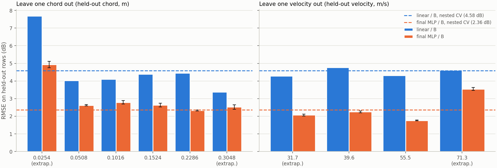
RMSE on the held-out chord (left) or velocity (right). Error bars are the SD over the MLP’s 3 random seeds; “extrap.” marks values outside the training range.¶
The MLP beats linear in all 10 shift tests.
Interpolation costs the MLP little. For held-out values inside the training range, its RMSE is 1.8–2.8 dB, close to its nested-CV 2.36 dB.
Extrapolation can hurt. Holding out the smallest chord (0.0254 m) roughly doubles the MLP’s RMSE, to about 4.9 dB. For linear it rises to about 7.7 dB, with R² below zero, i.e. worse than predicting the average. Holding out the highest velocity (71.3 m/s) raises the MLP’s RMSE to about 3.5 dB. The largest chord and the lowest velocity extrapolate well.
The result is not luck. The MLP’s RMSE varies by at most about 0.2 dB across the 3 seeds.
Caveats.
Each shift test scores a different set of setups and trains on a different amount of data from the nested-CV folds, so the comparison with the dashed lines is approximate. Some interpolation results come out slightly below the nested-CV RMSE for this reason.
Chord and angle are confounded: high angles were only tested on small chords, so leaving out the 0.0254 m chord also removes most of the high-angle setups. Part of that chord’s difficulty is really angle. An angle-extrapolation test was deliberately not run for the same reason.
Physics check: is faster flow louder?¶
At a fixed chord and angle, a higher free-stream velocity produces more turbulent trailing-edge noise, so the overall level should rise with speed. The measured spectra in the BPM report (NASA RP-1218) show this.
Groups: setups are grouped by (chord, angle), keeping groups tested at 2 or more speeds.
Like with like: within a group, each setup’s SPL is averaged over the frequency bands measured at every speed in that group.
Scoring: a group is “fully in order” if the predicted averages rise with speed like the measured ones, and each pair of speeds is also checked on its own.
Predictions are out-of-fold: each setup was predicted by a model that never saw it. The MLP’s predictions come from the nested-CV MLPs (each outer fold’s own tuned setting; the final setting was the most common choice), and linear’s from the same folds. Both are averaged over the 3 CV seeds.
Data: cross-validation rows only.
Model |
Groups fully in order |
Speed pairs in order |
Groups excluded (measured not louder at higher speed) |
|---|---|---|---|
MLP (nested-CV, B) |
19 / 21 (90.5%) |
66 / 68 (97.1%) |
7 |
linear / B |
21 / 21 (100.0%) |
68 / 68 (100.0%) |
7 |
Chord (m) |
Angle (deg) |
Speeds (m/s) |
Shared bands |
|---|---|---|---|
0.0254 |
0.0 |
31.7, 39.6, 55.5, 71.3 |
9 |
0.0254 |
4.8 |
39.6, 55.5, 71.3 |
8 |
0.0254 |
9.5 |
31.7, 39.6, 55.5 |
13 |
0.0254 |
17.4 |
31.7, 39.6, 71.3 |
15 |
0.0508 |
0.0 |
31.7, 39.6, 55.5, 71.3 |
13 |
0.2286 |
2.0 |
31.7, 39.6, 71.3 |
13 |
0.2286 |
4.0 |
31.7, 39.6, 55.5 |
13 |

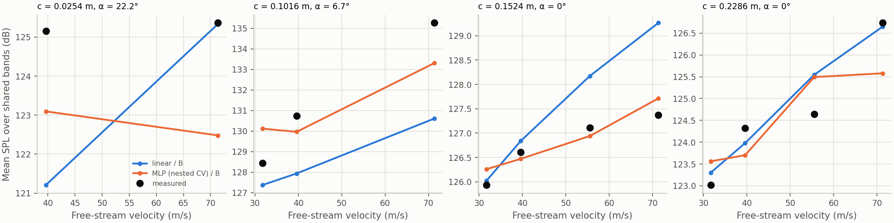
Mean SPL over the shared bands against velocity for four example groups: the two where the MLP’s order is wrong (left), then two typical ones.¶
The MLP gets 97% of speed pairs right (66 of 68), and the full order right in 19 of 21 groups.
Its two misses are the 0.0254 m chord at 22.2°, the worst-predicted conditions in the whole error analysis, where the measured level rises by only about 0.2 dB, and one of three pairs at 0.1016 m and 6.7°.
Linear scores 100%, but that says little about its accuracy. A linear model shifts SPL with speed by a fixed amount everywhere. Once it has learned that faster is louder, it applies that in every group. Passing this check is necessary for a physically sensible model, but not enough on its own.
The measured data itself breaks the rule in 7 of 28 groups, mostly at the smallest chord, where tonal peaks dominate. These groups are left out of the score.
Acceptance criteria¶
The criteria below were fixed in src/functions/acceptance.py and committed
on their own (commit 82c1b0d) before the hold-out evaluation, and
before the physics check had been written or run, so the pass marks cannot
have been chosen to suit the results. Every criterion is blind: its
outcome was unknown when its threshold was set.
C1 The MLP beats linear on the hold-out.
C2 Hold-out RMSE ≤ nested-CV mean + 2 × fold SD (2.365 + 2 × 0.227 = 2.819 dB, set B).
C3 Hold-out RMSE ≤ 3.0 dB, about a factor of two in acoustic power.
P1 The MLP gets the speed order right in at least 90% of speed pairs.
The hold-out criteria (C1, C2, C3) were evaluated in the single final run; see Final hold-out evaluation below. All four criteria pass.
A criterion was removed (HARKing). The original file also had a criterion “C1a: the MLP beats linear in at least 13 of the 15 nested-CV folds”. C1a was not written blind: the nested-CV results (MLP better in 15 of 15 folds) were already known when its threshold was set, so it was HARKing (hypothesising after the results are known). It was therefore removed post-hoc, as it was not an honest test, and it was removed rather than counted towards validating the model. Removing it only takes away a criterion the model passed, so it does not flatter the verdict. The fold-by-fold comparison is still shown as supporting evidence (Accuracy and comparison with linear), and the original file remains in the git history.
Criterion |
Description |
Threshold |
Value |
Result |
|---|---|---|---|---|
C1 |
MLP RMSE < linear RMSE on the hold-out |
MLP < linear |
MLP 2.630 vs linear 4.762 dB |
PASS |
C2 |
Hold-out RMSE <= CV mean + 2 x fold SD |
<= 2.819 dB |
2.630 dB |
PASS |
C3 |
Hold-out MLP RMSE small enough to be useful |
<= 3 dB |
2.630 dB |
PASS |
P1 |
MLP predicts faster flow is louder (speed pairs) |
>= 90% of pairs |
97.1% |
PASS |
Final hold-out evaluation¶
The test hold-out (16 setups, 227 rows; about 15% of setups, chosen with
TEST_SEED = 41 and stratified on chord) was used here for the first and
only time. Until this run it played no part in training, tuning, model
selection or any analysis.
Training: each model was trained once on all 1,276 cross-validation rows (90 setups), using the frozen settings in
functions.models.Prediction: each model predicted the hold-out rows once.
Model selection was already finished. The final MLP is the selected model, and the acceptance criteria apply to it. The runner-up is reported for comparison only.
Records: the code was committed before the run; the commit hash, library versions and model settings are in
results/holdout_run_info.txt, and the trained models are saved inresults/final_models/.
Setup |
Chord (m) |
Velocity (m/s) |
Angle (deg) |
Frequencies |
|---|---|---|---|---|
1 |
0.0254 |
31.7 |
4.8 |
13 |
13 |
0.0254 |
55.5 |
17.4 |
16 |
16 |
0.0254 |
71.3 |
9.5 |
11 |
21 |
0.0508 |
31.7 |
8.4 |
11 |
22 |
0.0508 |
31.7 |
15.4 |
16 |
37 |
0.0508 |
71.3 |
19.7 |
14 |
43 |
0.1016 |
39.6 |
3.3 |
13 |
45 |
0.1016 |
39.6 |
8.9 |
16 |
50 |
0.1016 |
55.5 |
6.7 |
8 |
71 |
0.1524 |
71.3 |
2.7 |
15 |
73 |
0.1524 |
71.3 |
7.2 |
16 |
86 |
0.2286 |
55.5 |
2.0 |
13 |
91 |
0.2286 |
71.3 |
4.0 |
17 |
92 |
0.2286 |
71.3 |
5.3 |
15 |
94 |
0.3048 |
31.7 |
0.0 |
18 |
98 |
0.3048 |
39.6 |
3.0 |
15 |
The hold-out covers all six chords, all four velocities and angles from 0° to 19.7°.
Results¶
Model |
Hold-out RMSE (dB) |
MAE (dB) |
R² |
Bias (dB) |
Fit time (s) |
Predict time (ms) |
Epochs |
|---|---|---|---|---|---|---|---|
linear |
4.762 |
3.645 |
0.511 |
-0.914 |
0.006 |
1.94 |
|
runner-up MLP |
2.434 |
1.809 |
0.872 |
-0.546 |
1.682 |
2.45 |
226 |
final MLP (selected) |
2.63 |
2.028 |
0.851 |
-1.024 |
2.166 |
2.7 |
177 |
Model |
CV estimate |
CV RMSE (dB) |
Hold-out RMSE (dB) |
|---|---|---|---|
linear |
repeated grouped CV |
4.582 ± 0.254 |
4.762 |
runner-up MLP |
inner CV (selection score) |
2.535 ± 0.121 |
2.434 |
final MLP (selected) |
nested CV (outer folds) |
2.365 ± 0.227 |
2.63 |

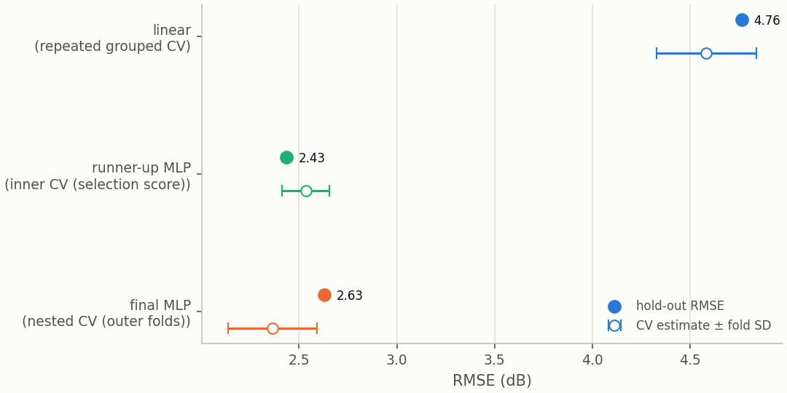
Hollow markers with bars: each model’s CV estimate ± fold SD. Filled markers: its hold-out RMSE.¶
Comparison (per setup) |
Setups |
Mean ± SD of RMSE difference (dB) |
Setups final MLP better |
Setups other model better |
|---|---|---|---|---|
final MLP - linear |
16 |
-2.08 ± 1.44 |
15 |
1 |
final MLP - runner-up MLP |
16 |
0.27 ± 0.45 |
4 |
12 |
Criterion |
Description |
Threshold |
Value |
Result |
|---|---|---|---|---|
C1 |
MLP RMSE < linear RMSE on the hold-out |
MLP < linear |
MLP 2.630 vs linear 4.762 dB |
PASS |
C2 |
Hold-out RMSE <= CV mean + 2 x fold SD |
<= 2.819 dB |
2.630 dB |
PASS |
C3 |
Hold-out MLP RMSE small enough to be useful |
<= 3 dB |
2.630 dB |
PASS |
P1 |
MLP predicts faster flow is louder (speed pairs) |
>= 90% of pairs |
97.1% |
PASS |
The final MLP passes every acceptance criterion. Its hold-out RMSE is 2.63 dB (R² 0.85), below the 3.0 dB usefulness limit (C3). It is within the 2.82 dB generalisation limit (C2), about one fold-SD above its nested-CV estimate of 2.37 dB.
It beats linear clearly: 2.63 against 4.76 dB, and on 15 of the 16 hold-out setups (by 2.1 ± 1.4 dB per setup). Linear’s hold-out RMSE is close to its CV estimate (4.58 ± 0.25 dB).
The runner-up did better than the final MLP on the hold-out: 2.43 against 2.63 dB, with a lower RMSE on 12 of the 16 setups (by 0.27 ± 0.45 dB per setup). Cross-validation had ranked it slightly behind (inner-CV 2.54 against 2.50 dB). This is reported, but the selected model does not change. Choosing a model because it did well on the hold-out would turn the hold-out into another round of model selection, and it would no longer be an honest test. With only 16 setups, the hold-out cannot settle such a small difference either way. The two MLPs are close, and the smaller one is a reasonable alternative.
The final MLP over-predicts on average (bias −1.0 dB). Its worst hold-out setups are small chords at high angles (19.7°, 17.4° and 15.4°), where it predicts too loud a spectrum. These are the same conditions the cross-validation error analysis identified as hardest.

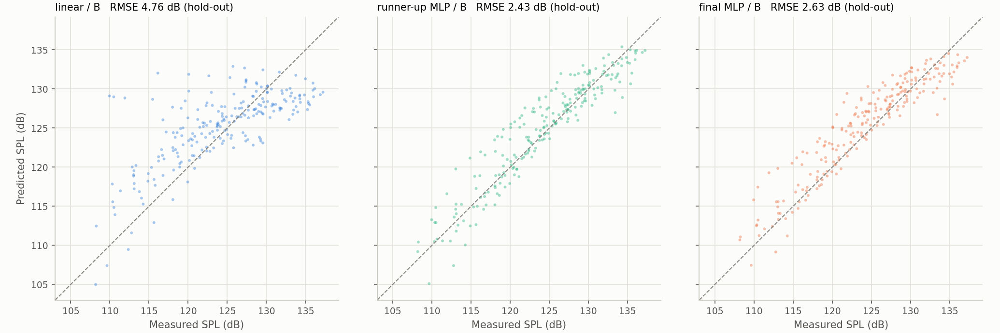
Predicted against measured SPL on the hold-out for linear, the runner-up and the final MLP (same axes).¶

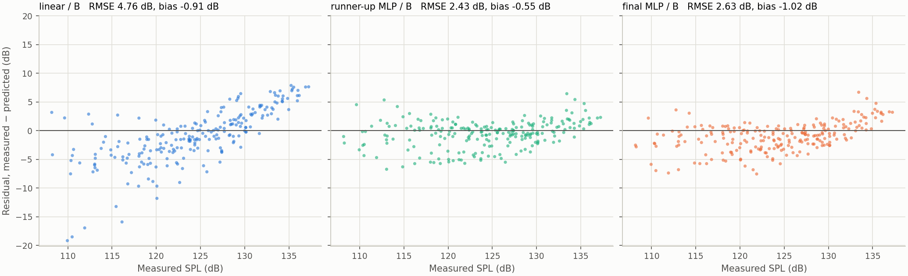
Residual (measured − predicted) against measured SPL on the hold-out. Above zero, the model predicted too low; below zero, too high. Some upward tilt is expected for any imperfect model: rows that happen to be measured very loud or very quiet tend to be ones where the prediction fell short. A flatter, narrower cloud means less systematic error.¶
Linear has a strong systematic trend. Its cloud tilts steeply upward: it predicts quiet rows too loud and loud rows too quiet, pulling every prediction towards the average.
Both MLPs are much flatter and narrower. The final MLP’s points lie mostly slightly below zero, meaning it predicts a little too loud, consistent with its −1.0 dB bias. Only the loudest rows sit above zero. The runner-up’s points are spread more evenly around zero.

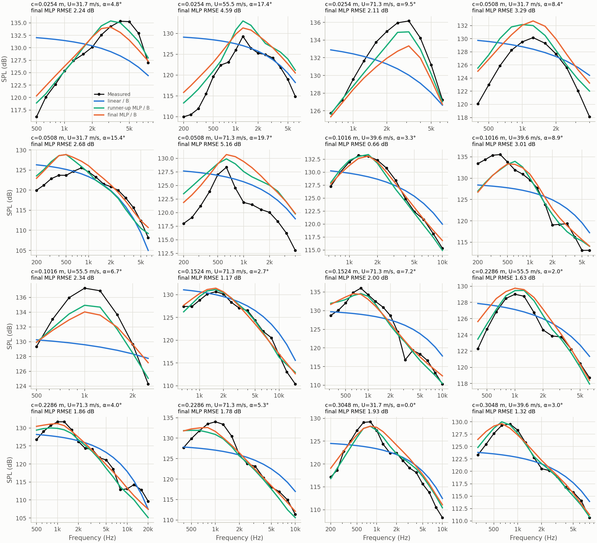
Every hold-out setup: measured spectrum (black) and the predictions of linear (blue), the runner-up (green) and the final MLP (orange).¶

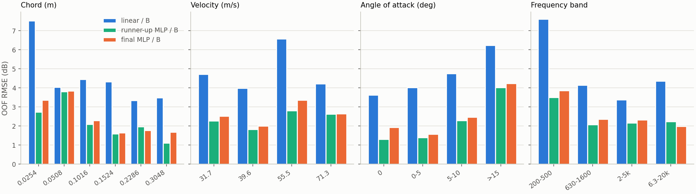
Hold-out RMSE by chord, velocity, angle band and frequency band. With only 16 setups, each group holds just a few setups, so these bars are much noisier than the cross-validation breakdown.¶
Grouped by |
Group |
Setups |
Rows |
linear RMSE (dB) |
runner-up MLP RMSE (dB) |
final MLP RMSE (dB) |
|---|---|---|---|---|---|---|
chord_length_m |
0.0254 |
3 |
40 |
7.52 |
2.74 |
3.36 |
chord_length_m |
0.0508 |
3 |
41 |
4.03 |
3.8 |
3.85 |
chord_length_m |
0.1016 |
3 |
37 |
4.45 |
2.08 |
2.29 |
chord_length_m |
0.1524 |
2 |
31 |
4.32 |
1.6 |
1.65 |
chord_length_m |
0.2286 |
3 |
45 |
3.34 |
1.96 |
1.77 |
chord_length_m |
0.3048 |
2 |
33 |
3.49 |
1.1 |
1.68 |
velocity_mps |
31.7 |
4 |
58 |
4.71 |
2.27 |
2.51 |
velocity_mps |
39.6 |
3 |
44 |
3.99 |
1.83 |
2.0 |
velocity_mps |
55.5 |
3 |
37 |
6.57 |
2.81 |
3.35 |
velocity_mps |
71.3 |
6 |
88 |
4.21 |
2.62 |
2.64 |
angle_band |
0 |
1 |
18 |
3.63 |
1.31 |
1.93 |
angle_band |
0-5 |
6 |
86 |
4.02 |
1.4 |
1.57 |
angle_band |
5-10 |
6 |
77 |
4.75 |
2.29 |
2.47 |
angle_band |
>15 |
3 |
46 |
6.23 |
4.01 |
4.23 |
frequency_band |
200-500 Hz |
13 |
40 |
7.61 |
3.51 |
3.86 |
frequency_band |
630-1600 Hz |
16 |
80 |
4.14 |
2.08 |
2.36 |
frequency_band |
2-5 kHz |
16 |
75 |
3.38 |
2.15 |
2.32 |
frequency_band |
6.3-20 kHz |
13 |
32 |
4.36 |
2.24 |
1.99 |
What these results cannot show¶
Precision of the hold-out score: the hold-out has only 16 setups, so its RMSE is a single, fairly noisy estimate. The cross-validation spread (about ±0.2 dB between folds) is a better guide to the uncertainty.
Extrapolation: the shift tests cover leaving out one chord or one velocity. They say nothing about geometries or flow conditions outside the tested ranges, or about other airfoil shapes.
Measurement noise: the irreducible scatter in the wind-tunnel data is not separated from model error, so the lowest achievable RMSE is unknown.